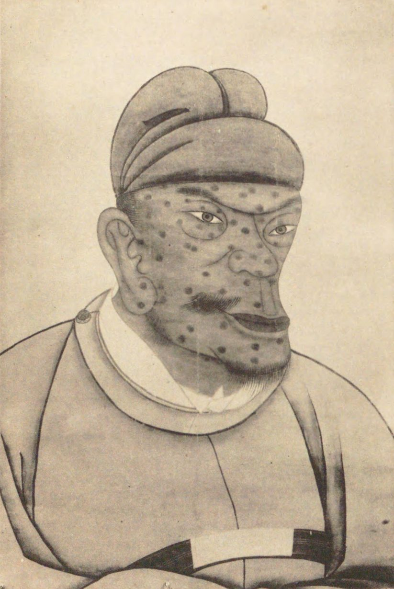
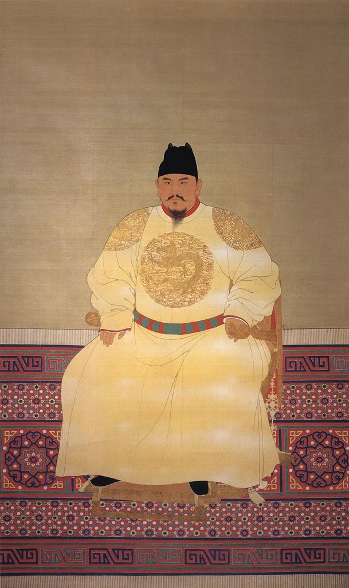

Artwork of the Day
One work for each of the nineteen meetings. Each opens a door the reading does not. Questions run Elemental, Intermediate, Advanced.
Album leaf with the text of Guanju. Commons, public domain.
Tue Sep 15Geography and prehistory
關雎Guanju
Shijing, Mao no. 1
Zhou dynasty. Illustrated album leaf, later.
The tradition opens with a love song about an osprey, then argues about it for two thousand years.
Kongzi: joy without wantonness. The Mao Preface: the queen consort's virtue. Also: a courtship poem.
- ElementalWho is in it, where, and what happens?
- IntermediateFour stanzas, one plant, three verbs. What does the repetition do?
- AdvancedHow does a love song become a lesson in statecraft?
Sanxingdui Museum. Commons, CC0.
Thu Sep 17Archaeology and writing
三星堆青銅大立人Standing figure
Sanxingdui, Sichuan
Bronze, c. 1200 BCE. Sanxingdui Museum.
Contemporary with Anyang, technically superb, looks nothing like Shang, and left no writing.
On the day writing appears, the control case. Bronze Age China was not one thing.
- ElementalDescribe it without naming it. Hands, eyes, feet, scale.
- IntermediateCompare those hands to a Shang ritual vessel. What is each object for?
- AdvancedShang left records; Sanxingdui did not. What does that do to the history?
National Museum of China. Commons, CC BY-SA 4.0.
Tue Sep 22Mandate of Heaven, House of Ru
大盂鼎Da Yu ding
Western Zhou ritual cauldron
Bronze, c. 1000 BCE. National Museum of China.
The Mandate of Heaven is not only a doctrine. It is cast inside this pot.
King Kang tells Yu that Yin drank away Heaven's charge and Zhou now holds it.
- ElementalWhere is the writing, and who could ever see it?
- IntermediateIt cooks offerings for the dead. How does that change the claim?
- AdvancedWho is a Mandate claim addressed to?
Hubei Provincial Museum. Commons, CC BY-SA 2.0.
Thu Sep 24House of Mo challenges the Ru
曾侯乙編鐘Bells of Marquis Yi of Zeng
Sixty-five bronze bells, one tomb
Bronze, 433 BCE. Hubei Provincial Museum.
Five tons of bronze, buried, so that one dead man could have an orchestra.
Against Music and Moderation in Funerals both indict this object. Put it up before Mozi speaks.
- ElementalCount what you see. What did it cost to make?
- IntermediateEach bell sounds two pitches. What knowledge is behind that?
- AdvancedDoes the object prove Mozi right or prove him a philistine?
Hunan Museum. Commons, public domain.
Tue Sep 29House of Dao; Ru 2.0
人物御龍帛畫Man Riding a Dragon
Painted silk from a Chu tomb
Silk, c. 300 BCE. Changsha. Hunan Museum.
Zhuangzi's century, Zhuangzi's country, and nobody in it is standing still.
Not a later painter's idea of Daoism. A contemporary object from the culture he came out of.
- ElementalWhat is the man doing, and where is he going?
- IntermediateIt was folded into a coffin. What is a painting for if its viewer is dead?
- AdvancedRiding the six vapours: metaphor, claim, or instructions?
Shanghai Museum. Commons, CC0.
Thu Oct 1Ru 3.0 and the House of Fa
商鞅方升Shang Yang's measure
The standard volume of Qin
Bronze, 344 BCE. Re-inscribed under Qin. Shanghai Museum.
Legalism you can hold. The state defines the unit; the unit defines the tax.
Everything in Lord Shang chapter 2 needs a way to measure a field, a harvest, a man's obligation.
- ElementalWhat is it, and what would you do with it?
- IntermediateWhy put the maker's name and the exact volume on the object?
- AdvancedIs a standard measure fairness, extraction, or both?
Museum of the Terracotta Army. Commons, CC0.
Tue Oct 6Qin: the First Emperor
兵馬俑Terracotta warrior
Tomb of the First Emperor
Earthenware, c. 210 BCE. Lintong, Shaanxi.
Look past the army. Every piece could be traced back to the workman who made it.
物勒工名: inscribe the maker's name, so a defect finds a person. Han Feizi in clay.
- ElementalLook only at the face. What makes him a particular man?
- IntermediateMoulded bodies, hand-finished heads. Why spend effort there?
- AdvancedIs naming the maker good government or fear?
Hunan Museum. Commons, public domain.
Thu Oct 8Han empire; Dong Zhongshu
馬王堆帛畫Funeral banner of Lady Dai
T-shaped silk, Mawangdui tomb 1
Silk, c. 168 BCE. Hunan Museum.
You read Dong Zhongshu on the king penetrating the three. Here are the three.
Heaven, the human world, the underworld, joined in one image. His cosmology needs exactly this.
- ElementalDivide it into zones. What is in each?
- IntermediateFind Lady Dai. How is she marked out?
- AdvancedDoes this illustrate correlative cosmology or do something else?
National Museum of Korea. Commons, KOGL Type 1.
Tue Oct 13The House of Fo enters
金銅彌勒菩薩半跏思惟像Pensive Bodhisattva
Korean National Treasure 83
Gilt bronze, late 6th–early 7th c. National Museum of Korea.
There is a near-twin of this figure in Kyoto, carved in wood.
Same pose, same fingers, same tilt. Transmission, in two objects, on the day you read Mouzi, Wŏn'gwang and Shōtoku.
- ElementalDescribe the pose. Weight, hand, eyes.
- IntermediateWhat is smooth and what is elaborate? Where did the effort go?
- AdvancedWhat has to change for a state to adopt a foreign religion?
Commons, CC0.
Thu Oct 15Sui, Tang, and Eurasia
載樂駱駝俑Camel with musicians
Sancai tomb figure
Glazed earthenware, Tang, 8th c. Shaanxi.
Central Asian musicians, playing on the back of a Bactrian camel, in a Chinese grave.
Nobody involved thought this was exotic. It was the eighth century.
- ElementalCount the figures. Faces, beards, hats, instruments.
- IntermediateWhy put this in a tomb? What does it say about the dead?
- AdvancedOpenness, appetite, or empire? Can the object tell them apart?
Palace Museum, Beijing. Commons, public domain.
Tue Oct 20馬大王之清談 · The Great Debate
步輦圖Emperor Taizong Receives the Envoy
Attributed to Yan Liben; the surviving scroll is likely a Song copy
Handscroll, ink and colour on silk. Palace Museum, Beijing.
Three men stand before a seated emperor. One ushers, one argues, one translates.
This is the staging of your debate: who is carried, who stands, who is allowed to speak, and in whose words.
- ElementalWho is seated, who stands, and how do you know the rank?
- IntermediateThe emperor is borne by women with fans and screens. What is that doing?
- AdvancedYour house has one audience with the throne. What does this scene say about how to use it?
Palace Museum, Beijing. Commons, public domain.
Tue Oct 27Song: cities, gender, Zhu Xi
清明上河圖Along the River During the Qingming Festival
Zhang Zeduan, detail of the original
Handscroll, ink and colour on silk, early 12th c. Palace Museum, Beijing.
You read The Attractions of the Capital. This is that text as a painting.
Shops, porters, boats, and a barge about to hit the bridge with everyone shouting.
- ElementalPick one square inch. Who is there and what do they do for a living?
- IntermediateNo frame, no vanishing point. How does a handscroll make you read a city?
- AdvancedZhu Xi wants granaries and family ritual. Is he describing this society or arguing with it?
Genji Monogatari Emaki. Commons, public domain.
Thu Oct 29Heian court culture
源氏物語絵巻Genji Monogatari Emaki
The Kashiwagi scene
Handscroll, 12th c. National Treasure, Japan.
Nobody has a face. A line for an eye, a hook for a nose.
引目鉤鼻, and the roofs blown off so you look down into rooms you were never meant to see.
- ElementalWhere are you standing? What was removed so you could see in?
- IntermediateIf every face is the same, how does the painter show feeling?
- AdvancedDoes that make the Paulownia Court colder, or sharper?
National Palace Museum, Taipei. Commons, public domain.
Tue Nov 3Final project workshop
早春圖Early Spring
Guo Xi
Hanging scroll, ink on silk, 1072. National Palace Museum, Taipei.
Workshop day gets the painter who also wrote the manual.
Guo Xi's three distances: looking up, looking through, looking across. Your problem today is the same one.
- ElementalTrace a path from the bottom edge to the top. Where does it break?
- IntermediateFind the three distances. What does each let you see?
- AdvancedDoes your project have a centre, or is it a list?
Haeinsa. Commons, CC BY 2.0.
Thu Nov 5The Mongol world; Goryeo
八萬大藏經Tripitaka Koreana
81,258 woodblocks at Haeinsa
Carved 1237–1248, during the invasions. UNESCO Memory of the World.
The Mongols burned the first set. Goryeo answered, mid-invasion, by carving another 81,258 blocks.
Sixteen years of work by a state losing a war, on the argument that the merit would save it. It did not.
- ElementalWhat are you looking at, and how is it stored?
- IntermediateEstimate the labour. Who feeds those people during an invasion?
- AdvancedReligious act, military act, or a claim about who Goryeo is?
Mōko Shūrai Ekotoba. Commons, public domain.
Tue Nov 10Rise of the samurai
蒙古襲来絵詞Illustrated Account of the Mongol Invasions
Commissioned by Takezaki Suenaga
Handscroll, c. 1293. Imperial Household Collection.
A warrior paid for a painting of himself so that he could get paid.
You also read The Way of the Warrior today. One is a code. This is a receipt.
- ElementalWhat happens in the scene, and where is Suenaga?
- IntermediateHe paid for it. Which details would he insist on?
- AdvancedCode or claim: which one actually held Kamakura together?
National Palace Museum, Taipei. Commons, public domain.
Thu Nov 12Yuan China; Muromachi Japan
鵲華秋色圖Autumn Colors on the Que and Hua Mountains
Zhao Mengfu
Handscroll, 1295, 28.4 × 93.2 cm. National Palace Museum, Taipei.
A Song prince serving the Mongols paints a friend's homeland that the friend has never seen.
Zhou Mi refused to serve. Zhao did, went north, and painted it from memory. The geography is deliberately wrong.
- ElementalFind the two mountains. How does the brushwork differ?
- IntermediatePainted from memory for someone who cannot go. What accuracy is it after?
- AdvancedCan a landscape be an apology? What would you need to know?


Tue Nov 17Ming: overcoming the Mongols
明太祖Two portraits of the Hongwu Emperor
The same founder, painted twice
Ming and later. National Palace Museum, Taipei, and other collections.
One is long-jawed and pockmarked. One is a serene sovereign in yellow. Both are him.
You read his own Proclamations today. Which is propaganda is not the question. Both are.
- ElementalList the differences. Face, body, clothing, setting.
- IntermediateWho made each, for whom, to hang where?
- AdvancedA peasant who became emperor is a problem. Does either portrait solve it?
Attributed to Sin Saimdang. Commons, CC BY 4.0.
Thu Nov 19Joseon: families and women
초충도Grass and Insects
Attributed to Sin Saimdang
Ink and colour on paper, first half of the 16th c. Korea.
On the day about women in the Joseon family system, a painting by a woman inside it.
Sin Saimdang (1504–1551), painter, later rebuilt into the model mother, now on the 50,000-won note.
- ElementalWhat is growing, and what is crawling on it? Count the species.
- IntermediateA poppy and a lizard, at this scale. What is the subject?
- AdvancedWhat separates the painter from the figure on the banknote?